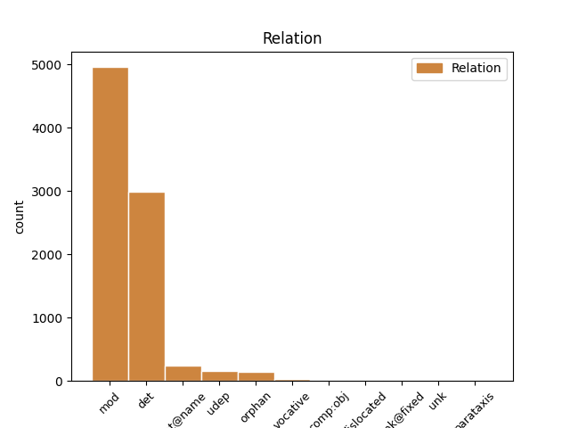
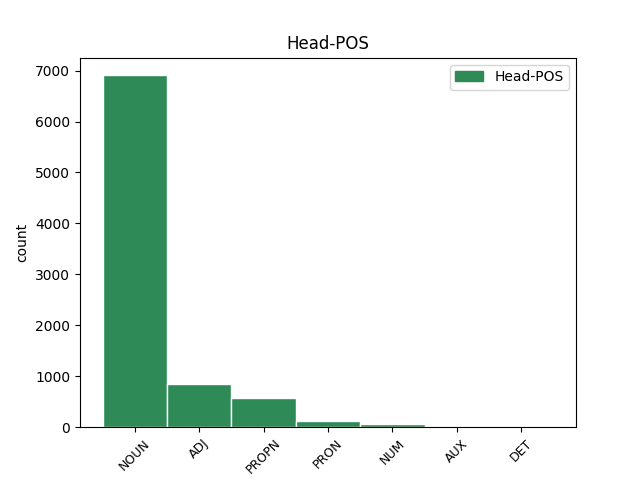
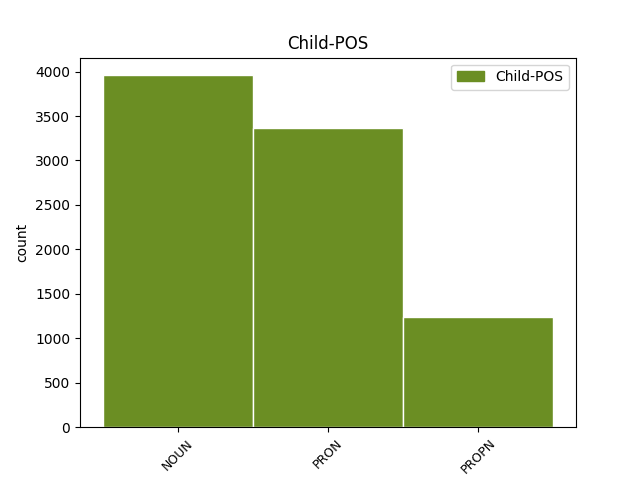

Distribution of features within this leaf



Agreement Rules sorted by frequency.
- When the dependent token is the determiner(det) of the head token, and the head token is NOUN and the dependent token is PRON.
1 σύνδουλός _ _ _ _ 0 _ _ _
2 σού _ _ _ _ 0 _ _ _
3 εἰμι _ _ _ _ 0 _ _ _
4 καὶ _ _ _ _ 0 _ _ _
5 τῶν _ _ _ _ 0 _ _ _
6 ἀδελφῶν ἀδελφός NOUN Nb Case=Gen|Gender=Masc|Number=Plur 0 _ _ _
7 σου σύ PRON Pp Case=Gen|Gender=Masc|Number=Sing|Person=2|PronType=Prs 6 det _ ref=REV_22.9
8 τῶν _ _ _ _ 0 _ _ _
9 προφητῶν _ _ _ _ 0 _ _ _
10 καὶ _ _ _ _ 0 _ _ _
11 τῶν _ _ _ _ 0 _ _ _
12 τηρούντων _ _ _ _ 0 _ _ _
13 τοὺς _ _ _ _ 0 _ _ _
14 λόγους _ _ _ _ 0 _ _ _
15 τοῦ _ _ _ _ 0 _ _ _
16 βιβλίου _ _ _ _ 0 _ _ _
17 τούτου _ _ _ _ 0 _ _ _
1 καὶ _ _ _ _ 0 _ _ _
2 ἐάν _ _ _ _ 0 _ _ _
3 τις _ _ _ _ 0 _ _ _
4 ἀφέλῃ _ _ _ _ 0 _ _ _
5 ἀπὸ _ _ _ _ 0 _ _ _
6 τῶν _ _ _ _ 0 _ _ _
7 λόγων _ _ _ _ 0 _ _ _
8 τοῦ _ _ _ _ 0 _ _ _
9 βιβλίου _ _ _ _ 0 _ _ _
10 τῆς _ _ _ _ 0 _ _ _
11 προφητείας _ _ _ _ 0 _ _ _
12 ταύτης _ _ _ _ 0 _ _ _
13 ἀφελεῖ _ _ _ _ 0 _ _ _
14 ὁ _ _ _ _ 0 _ _ _
15 θεὸς _ _ _ _ 0 _ _ _
16 τὸ _ _ _ _ 0 _ _ _
17 μέρος _ _ _ _ 0 _ _ _
18 αὐτοῦ _ _ _ _ 0 _ _ _
19 ἀπὸ _ _ _ _ 0 _ _ _
20 τοῦ _ _ _ _ 0 _ _ _
21 ξύλου ξύλον NOUN Nb Case=Gen|Gender=Neut|Number=Sing 0 _ _ _
22 τῆς _ _ _ _ 0 _ _ _
23 ζωῆς ζωή NOUN Nb Case=Gen|Gender=Fem|Number=Sing 21 mod _ ref=REV_22.19
24 καὶ _ _ _ _ 0 _ _ _
25 ἐκ _ _ _ _ 0 _ _ _
26 τῆς _ _ _ _ 0 _ _ _
27 πόλεως _ _ _ _ 0 _ _ _
28 τῆς _ _ _ _ 0 _ _ _
29 ἁγίας _ _ _ _ 0 _ _ _
30 τῶν _ _ _ _ 0 _ _ _
31 γεγραμμένων _ _ _ _ 0 _ _ _
32 ἐν _ _ _ _ 0 _ _ _
33 τῷ _ _ _ _ 0 _ _ _
34 βιβλίῳ _ _ _ _ 0 _ _ _
35 τούτῳ _ _ _ _ 0 _ _ _
1 πρὸς _ _ _ _ 0 _ _ _
2 ὃν _ _ _ _ 0 _ _ _
3 προσερχόμενοι _ _ _ _ 0 _ _ _
4 λίθον _ _ _ _ 0 _ _ _
5 ζῶντα _ _ _ _ 0 _ _ _
6 ὑπὸ _ _ _ _ 0 _ _ _
7 ἀνθρώπων _ _ _ _ 0 _ _ _
8 μὲν _ _ _ _ 0 _ _ _
9 ἀποδεδοκιμασμένον _ _ _ _ 0 _ _ _
10 παρὰ _ _ _ _ 0 _ _ _
11 δὲ _ _ _ _ 0 _ _ _
12 θεῷ _ _ _ _ 0 _ _ _
13 ἐκλεκτὸν _ _ _ _ 0 _ _ _
14 ἔντιμον _ _ _ _ 0 _ _ _
15 καὶ _ _ _ _ 0 _ _ _
16 αὐτοὶ _ _ _ _ 0 _ _ _
17 ὡς _ _ _ _ 0 _ _ _
18 λίθοι _ _ _ _ 0 _ _ _
19 ζῶντες _ _ _ _ 0 _ _ _
20 οἰκοδομεῖσθε _ _ _ _ 0 _ _ _
21 οἶκος _ _ _ _ 0 _ _ _
22 πνευματικὸς _ _ _ _ 0 _ _ _
23 εἰς _ _ _ _ 0 _ _ _
24 ἱεράτευμα _ _ _ _ 0 _ _ _
25 ἅγιον _ _ _ _ 0 _ _ _
26 ἀνενέγκαι _ _ _ _ 0 _ _ _
27 πνευματικὰς _ _ _ _ 0 _ _ _
28 θυσίας _ _ _ _ 0 _ _ _
29 εὐπροσδέκτους _ _ _ _ 0 _ _ _
30 θεῷ _ _ _ _ 0 _ _ _
31 διὰ _ _ _ _ 0 _ _ _
32 Ἰησοῦ Ἰησοῦς PROPN Ne Case=Gen|Gender=Masc|Number=Sing 0 _ _ _
33 Χριστοῦ Χριστός PROPN Ne Case=Gen|Gender=Masc|Number=Sing 32 flat@name _ ref=1PET_2.5
1 καὶ _ _ _ _ 0 _ _ _
2 εἶδα _ _ _ _ 0 _ _ _
3 τὴν _ _ _ _ 0 _ _ _
4 γυναῖκα _ _ _ _ 0 _ _ _
5 μεθύουσαν _ _ _ _ 0 _ _ _
6 ἐκ _ _ _ _ 0 _ _ _
7 τοῦ _ _ _ _ 0 _ _ _
8 αἵματος _ _ _ _ 0 _ _ _
9 τῶν _ _ _ _ 0 _ _ _
10 ἁγίων _ _ _ _ 0 _ _ _
11 καὶ _ _ _ _ 0 _ _ _
12 ἐκ _ _ _ _ 0 _ _ _
13 τοῦ _ _ _ _ 0 _ _ _
14 αἵματος _ _ _ _ 0 _ _ _
15 τῶν _ _ _ _ 0 _ _ _
16 μαρτύρων μάρτυς NOUN Nb Case=Gen|Gender=Masc|Number=Plur 0 _ _ _
17 Ἰησοῦ Ἰησοῦς PROPN Ne Case=Gen|Gender=Masc|Number=Sing 16 mod _ ref=REV_17.6
1 ἀλλὰ _ _ _ _ 0 _ _ _
2 ἐνδύσασθε _ _ _ _ 0 _ _ _
3 τὸν _ _ _ _ 0 _ _ _
4 κύριον _ _ _ _ 0 _ _ _
5 Ἰησοῦν Ἰησοῦς PROPN Ne Case=Acc|Gender=Masc|Number=Sing 0 _ _ _
6 Χριστόν Χριστός PROPN Ne Case=Acc|Gender=Masc|Number=Sing 5 mod _ ref=ROM_13.14
7 καὶ _ _ _ _ 0 _ _ _
8 τῆς _ _ _ _ 0 _ _ _
9 σαρκὸς _ _ _ _ 0 _ _ _
10 πρόνοιαν _ _ _ _ 0 _ _ _
11 μὴ _ _ _ _ 0 _ _ _
12 ποιεῖσθε _ _ _ _ 0 _ _ _
13 εἰς _ _ _ _ 0 _ _ _
14 ἐπιθυμίας _ _ _ _ 0 _ _ _
1 ἔτι _ _ _ _ 0 _ _ _
2 γὰρ _ _ _ _ 0 _ _ _
3 μικρὸν μικρός ADJ A- Case=Acc|Degree=Pos|Gender=Neut|Number=Sing 0 _ _ _
4 ὅσον ὅσος PRON Pr Case=Acc|Gender=Neut|Number=Sing|PronType=Rel 3 det _ ref=HEB_10.37
5 ὅσον _ _ _ _ 0 _ _ _
6 ὁ _ _ _ _ 0 _ _ _
7 ἐρχόμενος _ _ _ _ 0 _ _ _
8 ἥξει _ _ _ _ 0 _ _ _
9 καὶ _ _ _ _ 0 _ _ _
10 οὐ _ _ _ _ 0 _ _ _
11 χρονίσει _ _ _ _ 0 _ _ _
1 καὶ _ _ _ _ 0 _ _ _
2 ὠργίσθη _ _ _ _ 0 _ _ _
3 ὁ _ _ _ _ 0 _ _ _
4 δράκων _ _ _ _ 0 _ _ _
5 ἐπὶ _ _ _ _ 0 _ _ _
6 τῇ _ _ _ _ 0 _ _ _
7 γυναικί _ _ _ _ 0 _ _ _
8 καὶ _ _ _ _ 0 _ _ _
9 ἀπῆλθεν _ _ _ _ 0 _ _ _
10 ποιῆσαι _ _ _ _ 0 _ _ _
11 πόλεμον _ _ _ _ 0 _ _ _
12 μετὰ _ _ _ _ 0 _ _ _
13 τῶν _ _ _ _ 0 _ _ _
14 λοιπῶν λοιπός ADJ A- Case=Gen|Degree=Pos|Gender=Masc|Number=Plur 0 _ _ _
15 τοῦ _ _ _ _ 0 _ _ _
16 σπέρματος σπέρμα NOUN Nb Case=Gen|Gender=Neut|Number=Sing 14 mod _ ref=REV_12.17
17 αὐτῆς _ _ _ _ 0 _ _ _
18 τῶν _ _ _ _ 0 _ _ _
19 τηρούντων _ _ _ _ 0 _ _ _
20 τὰς _ _ _ _ 0 _ _ _
21 ἐντολὰς _ _ _ _ 0 _ _ _
22 τοῦ _ _ _ _ 0 _ _ _
23 θεοῦ _ _ _ _ 0 _ _ _
24 καὶ _ _ _ _ 0 _ _ _
25 ἐχόντων _ _ _ _ 0 _ _ _
26 τὴν _ _ _ _ 0 _ _ _
27 μαρτυρίαν _ _ _ _ 0 _ _ _
28 Ἰησοῦ _ _ _ _ 0 _ _ _
1 Ἀδελφοί _ _ _ _ 0 _ _ _
2 μου _ _ _ _ 0 _ _ _
3 μὴ _ _ _ _ 0 _ _ _
4 ἐν _ _ _ _ 0 _ _ _
5 προσωπολημψίαις _ _ _ _ 0 _ _ _
6 ἔχετε _ _ _ _ 0 _ _ _
7 τὴν _ _ _ _ 0 _ _ _
8 πίστιν _ _ _ _ 0 _ _ _
9 τοῦ _ _ _ _ 0 _ _ _
10 κυρίου _ _ _ _ 0 _ _ _
11 ἡμῶν _ _ _ _ 0 _ _ _
12 Ἰησοῦ Ἰησοῦς PROPN Ne Case=Gen|Gender=Masc|Number=Sing 0 _ _ _
13 Χριστοῦ _ _ _ _ 0 _ _ _
14 τῆς _ _ _ _ 0 _ _ _
15 δόξης δόξα NOUN Nb Case=Gen|Gender=Fem|Number=Sing 12 mod _ ref=JAS_2.1
1 οἱ _ _ _ _ 0 _ _ _
2 ἔμποροι _ _ _ _ 0 _ _ _
3 τούτων _ _ _ _ 0 _ _ _
4 οἱ _ _ _ _ 0 _ _ _
5 πλουτήσαντες _ _ _ _ 0 _ _ _
6 ἀπ’ _ _ _ _ 0 _ _ _
7 αὐτῆς _ _ _ _ 0 _ _ _
8 ἀπὸ _ _ _ _ 0 _ _ _
9 μακρόθεν _ _ _ _ 0 _ _ _
10 στήσονται _ _ _ _ 0 _ _ _
11 διὰ _ _ _ _ 0 _ _ _
12 τὸν _ _ _ _ 0 _ _ _
13 φόβον _ _ _ _ 0 _ _ _
14 τοῦ _ _ _ _ 0 _ _ _
15 βασανισμοῦ βασανισμός NOUN Nb Case=Gen|Gender=Masc|Number=Sing 0 _ _ _
16 αὐτῆς αὐτός PRON Pp Case=Gen|Gender=Fem|Number=Sing|Person=3|PronType=Prs 15 mod _ ref=REV_18.15
17 κλαίοντες _ _ _ _ 0 _ _ _
18 καὶ _ _ _ _ 0 _ _ _
19 πενθοῦντες _ _ _ _ 0 _ _ _
20 λέγοντες _ _ _ _ 0 _ _ _
1 καὶ _ _ _ _ 0 _ _ _
2 ἴδον _ _ _ _ 0 _ _ _
3 καὶ _ _ _ _ 0 _ _ _
4 ἰδοὺ _ _ _ _ 0 _ _ _
5 ἵππος ἵππος NOUN Nb Case=Nom|Gender=Masc|Number=Sing 0 _ _ _
6 χλωρός _ _ _ _ 0 _ _ _
7 καὶ _ _ _ _ 0 _ _ _
8 ὁ _ _ _ _ 0 _ _ _
9 καθήμενος _ _ _ _ 0 _ _ _
10 ἐπάνω _ _ _ _ 0 _ _ _
11 αὐτοῦ _ _ _ _ 0 _ _ _
12 ὄνομα _ _ _ _ 0 _ _ _
13 αὐτῷ _ _ _ _ 0 _ _ _
14 θάνατος θάνατος NOUN Nb Case=Nom|Gender=Masc|Number=Sing 5 orphan _ ref=REV_6.8
15 καὶ _ _ _ _ 0 _ _ _
16 ὁ _ _ _ _ 0 _ _ _
17 ᾅδης _ _ _ _ 0 _ _ _
18 ἠκολούθει _ _ _ _ 0 _ _ _
19 μετ’ _ _ _ _ 0 _ _ _
20 αὐτοῦ _ _ _ _ 0 _ _ _
1 ἀλλὰ _ _ _ _ 0 _ _ _
2 ἕκαστος _ _ _ _ 0 _ _ _
3 ἴδιον _ _ _ _ 0 _ _ _
4 ἔχει _ _ _ _ 0 _ _ _
5 χάρισμα _ _ _ _ 0 _ _ _
6 ἐκ _ _ _ _ 0 _ _ _
7 θεοῦ _ _ _ _ 0 _ _ _
8 ὁ ὁ PRON Pp Case=Nom|Gender=Masc|Number=Sing|Person=3|PronType=Prs 0 _ _ _
9 μὲν _ _ _ _ 0 _ _ _
10 οὕτως _ _ _ _ 0 _ _ _
11 ὁ ὁ PRON Pp Case=Nom|Gender=Masc|Number=Sing|Person=3|PronType=Prs 8 orphan _ ref=1COR_7.7
12 δὲ _ _ _ _ 0 _ _ _
13 οὕτως _ _ _ _ 0 _ _ _
1 ὅτι _ _ _ _ 0 _ _ _
2 πάντες _ _ _ _ 0 _ _ _
3 εἰδήσουσίν _ _ _ _ 0 _ _ _
4 με _ _ _ _ 0 _ _ _
5 ἀπὸ _ _ _ _ 0 _ _ _
6 μικροῦ _ _ _ _ 0 _ _ _
7 ἕως _ _ _ _ 0 _ _ _
8 μεγάλου μέγας ADJ A- Case=Gen|Degree=Pos|Gender=Masc|Number=Sing 0 _ _ _
9 αὐτῶν αὐτός PRON Pp Case=Gen|Gender=Masc|Number=Plur|Person=3|PronType=Prs 8 mod _ ref=HEB_8.11
1 ὁ _ _ _ _ 0 _ _ _
2 ποιῶν _ _ _ _ 0 _ _ _
3 τοὺς _ _ _ _ 0 _ _ _
4 ἀγγέλους _ _ _ _ 0 _ _ _
5 αὐτοῦ _ _ _ _ 0 _ _ _
6 πνεύματα _ _ _ _ 0 _ _ _
7 καὶ _ _ _ _ 0 _ _ _
8 τοὺς _ _ _ _ 0 _ _ _
9 λειτουργοὺς λειτουργός NOUN Nb Case=Acc|Gender=Masc|Number=Plur 12 comp:obj _ ref=HEB_1.7
10 αὐτοῦ _ _ _ _ 0 _ _ _
11 πυρὸς _ _ _ _ 0 _ _ _
12 φλόγα φλόξ NOUN Nb Case=Acc|Gender=Fem|Number=Sing 0 _ _ _
1 ἐν _ _ _ _ 0 _ _ _
2 ὑμῖν ὑμεῖς PRON Pp Case=Dat|Gender=Masc|Number=Plur|Person=2|PronType=Prs 0 _ _ _
3 αὐτοῖς αὐτός PRON Pp Case=Dat|Gender=Masc|Number=Plur|Person=3|PronType=Prs 2 det _ ref=1COR_11.13
4 κρίνατε _ _ _ _ 0 _ _ _
1 ἐοῦσαν _ _ _ _ 0 _ _ _
2 γάρ _ _ _ _ 0 _ _ _
3 μιν _ _ _ _ 0 _ _ _
4 τὸ _ _ _ _ 0 _ _ _
5 εἶδος εἶδος NOUN Nb Case=Acc|Gender=Neut|Number=Sing 6 udep _ ref=6.61.3
6 φλαύρην φλαῦρος ADJ A- Case=Acc|Degree=Pos|Gender=Fem|Number=Sing 0 _ _ _
7 ἡ _ _ _ _ 0 _ _ _
8 τροφὸς _ _ _ _ 0 _ _ _
9 αὐτῆς _ _ _ _ 0 _ _ _
10 οἷα _ _ _ _ 0 _ _ _
11 ἀνθρώπων _ _ _ _ 0 _ _ _
12 τε _ _ _ _ 0 _ _ _
13 ὀλβίων _ _ _ _ 0 _ _ _
14 θυγατέρα _ _ _ _ 0 _ _ _
15 καὶ _ _ _ _ 0 _ _ _
16 δυσειδέα _ _ _ _ 0 _ _ _
17 ἐοῦσαν _ _ _ _ 0 _ _ _
18 πρὸς _ _ _ _ 0 _ _ _
19 δὲ _ _ _ _ 0 _ _ _
20 καὶ _ _ _ _ 0 _ _ _
21 ὁρῶσα _ _ _ _ 0 _ _ _
22 τοὺς _ _ _ _ 0 _ _ _
23 γονέας _ _ _ _ 0 _ _ _
24 συμφορὴν _ _ _ _ 0 _ _ _
25 τὸ _ _ _ _ 0 _ _ _
26 εἶδος _ _ _ _ 0 _ _ _
27 αὐτῆς _ _ _ _ 0 _ _ _
28 ποιευμένους _ _ _ _ 0 _ _ _
29 ταῦτα _ _ _ _ 0 _ _ _
30 ἕκαστα _ _ _ _ 0 _ _ _
31 μαθοῦσα _ _ _ _ 0 _ _ _
32 ἐπιφράζεται _ _ _ _ 0 _ _ _
33 τοιάδε _ _ _ _ 0 _ _ _
1 οὐχ _ _ _ _ 0 _ _ _
2 ὑμεῖς _ _ _ _ 0 _ _ _
3 με _ _ _ _ 0 _ _ _
4 ἐξελέξασθε _ _ _ _ 0 _ _ _
5 ἀλλ’ _ _ _ _ 0 _ _ _
6 ἐγὼ _ _ _ _ 0 _ _ _
7 ἐξελεξάμην _ _ _ _ 0 _ _ _
8 ὑμᾶς _ _ _ _ 0 _ _ _
9 καὶ _ _ _ _ 0 _ _ _
10 ἔθηκα _ _ _ _ 0 _ _ _
11 ὑμᾶς _ _ _ _ 0 _ _ _
12 ἵνα _ _ _ _ 0 _ _ _
13 ὑμεῖς _ _ _ _ 0 _ _ _
14 ὑπάγητε _ _ _ _ 0 _ _ _
15 καὶ _ _ _ _ 0 _ _ _
16 καρπὸν _ _ _ _ 0 _ _ _
17 φέρητε _ _ _ _ 0 _ _ _
18 καὶ _ _ _ _ 0 _ _ _
19 ὁ _ _ _ _ 0 _ _ _
20 καρπὸς _ _ _ _ 0 _ _ _
21 ὑμῶν _ _ _ _ 0 _ _ _
22 μένῃ _ _ _ _ 0 _ _ _
23 ἵνα _ _ _ _ 0 _ _ _
24 ὅ ὅστις PRON Pr Case=Acc|Gender=Neut|Number=Sing|PronType=Rel 0 _ _ _
25 τι τι PRON Pr Case=Acc|Gender=Neut|Number=Sing|PronType=Rel 24 unk@fixed _ ref=JOHN_15.16
26 ἂν _ _ _ _ 0 _ _ _
27 αἰτήσητε _ _ _ _ 0 _ _ _
28 τὸν _ _ _ _ 0 _ _ _
29 πατέρα _ _ _ _ 0 _ _ _
30 ἐν _ _ _ _ 0 _ _ _
31 τῷ _ _ _ _ 0 _ _ _
32 ὀνόματί _ _ _ _ 0 _ _ _
33 μου _ _ _ _ 0 _ _ _
34 δῷ _ _ _ _ 0 _ _ _
35 ὑμῖν _ _ _ _ 0 _ _ _
1 ἡ _ _ _ _ 0 _ _ _
2 γυνὴ _ _ _ _ 0 _ _ _
3 οὖν _ _ _ _ 0 _ _ _
4 ἐν _ _ _ _ 0 _ _ _
5 τῇ _ _ _ _ 0 _ _ _
6 ἀναστάσει _ _ _ _ 0 _ _ _
7 τίνος τίς PRON Pi Case=Gen|Gender=Masc|Number=Sing|PronType=Int 0 _ _ _
8 αὐτῶν αὐτός PRON Pp Case=Gen|Gender=Masc|Number=Plur|Person=3|PronType=Prs 7 mod _ ref=LUKE_20.33
9 γίνεται _ _ _ _ 0 _ _ _
10 γυνή _ _ _ _ 0 _ _ _
1 ἄρτι _ _ _ _ 0 _ _ _
2 ἐγένετο _ _ _ _ 0 _ _ _
3 ἡ _ _ _ _ 0 _ _ _
4 σωτηρία _ _ _ _ 0 _ _ _
5 καὶ _ _ _ _ 0 _ _ _
6 ἡ _ _ _ _ 0 _ _ _
7 δύναμις _ _ _ _ 0 _ _ _
8 καὶ _ _ _ _ 0 _ _ _
9 ἡ _ _ _ _ 0 _ _ _
10 βασιλεία _ _ _ _ 0 _ _ _
11 τοῦ _ _ _ _ 0 _ _ _
12 θεοῦ _ _ _ _ 0 _ _ _
13 ἡμῶν _ _ _ _ 0 _ _ _
14 καὶ _ _ _ _ 0 _ _ _
15 ἡ _ _ _ _ 0 _ _ _
16 ἐξουσία _ _ _ _ 0 _ _ _
17 τοῦ _ _ _ _ 0 _ _ _
18 Χριστοῦ Χριστός PROPN Ne Case=Gen|Gender=Masc|Number=Sing 0 _ _ _
19 αὐτοῦ αὐτός PRON Pp Case=Gen|Gender=Masc|Number=Sing|Person=3|PronType=Prs 18 det _ ref=REV_12.10
20 ὅτι _ _ _ _ 0 _ _ _
21 ἐβλήθη _ _ _ _ 0 _ _ _
22 ὁ _ _ _ _ 0 _ _ _
23 κατήγωρ _ _ _ _ 0 _ _ _
24 τῶν _ _ _ _ 0 _ _ _
25 ἀδελφῶν _ _ _ _ 0 _ _ _
26 ἡμῶν _ _ _ _ 0 _ _ _
27 ὁ _ _ _ _ 0 _ _ _
28 κατηγορῶν _ _ _ _ 0 _ _ _
29 αὐτοὺς _ _ _ _ 0 _ _ _
30 ἐνώπιον _ _ _ _ 0 _ _ _
31 τοῦ _ _ _ _ 0 _ _ _
32 θεοῦ _ _ _ _ 0 _ _ _
33 ἡμῶν _ _ _ _ 0 _ _ _
34 ἡμέρας _ _ _ _ 0 _ _ _
35 καὶ _ _ _ _ 0 _ _ _
36 νυκτός _ _ _ _ 0 _ _ _
1 ἔρχεται _ _ _ _ 0 _ _ _
2 δὲ _ _ _ _ 0 _ _ _
3 ὁ _ _ _ _ 0 _ _ _
4 ἰσχυρότερός _ _ _ _ 0 _ _ _
5 μου _ _ _ _ 0 _ _ _
6 οὗ ὅς PRON Pr Case=Gen|Gender=Masc|Number=Sing|PronType=Rel 14 dislocated _ ref=LUKE_3.16
7 οὐκ _ _ _ _ 0 _ _ _
8 εἰμὶ _ _ _ _ 0 _ _ _
9 ἱκανὸς _ _ _ _ 0 _ _ _
10 λῦσαι _ _ _ _ 0 _ _ _
11 τὸν _ _ _ _ 0 _ _ _
12 ἱμάντα _ _ _ _ 0 _ _ _
13 τῶν _ _ _ _ 0 _ _ _
14 ὑποδημάτων ὑπόδημα NOUN Nb Case=Gen|Gender=Neut|Number=Plur 0 _ _ _
15 αὐτοῦ _ _ _ _ 0 _ _ _
1 πᾶς _ _ _ _ 0 _ _ _
2 δὲ _ _ _ _ 0 _ _ _
3 ὁ _ _ _ _ 0 _ _ _
4 ἀγωνιζόμενος _ _ _ _ 0 _ _ _
5 πάντα _ _ _ _ 0 _ _ _
6 ἐγκρατεύεται _ _ _ _ 0 _ _ _
7 ἐκεῖνοι ἐκεῖνος ADJ Pd Case=Nom|Gender=Masc|Number=Plur 0 _ _ _
8 μὲν _ _ _ _ 0 _ _ _
9 οὖν _ _ _ _ 0 _ _ _
10 ἵνα _ _ _ _ 0 _ _ _
11 φθαρτὸν _ _ _ _ 0 _ _ _
12 στέφανον _ _ _ _ 0 _ _ _
13 λάβωσιν _ _ _ _ 0 _ _ _
14 ἡμεῖς ἡμεῖς PRON Pp Case=Nom|Gender=Masc|Number=Plur|Person=1|PronType=Prs 7 orphan _ ref=1COR_9.25
15 δὲ _ _ _ _ 0 _ _ _
16 ἄφθαρτον _ _ _ _ 0 _ _ _
1 μόνον μόνος ADJ A- Case=Acc|Degree=Pos|Gender=Neut|Number=Sing 0 _ _ _
2 μὴ _ _ _ _ 0 _ _ _
3 τὴν _ _ _ _ 0 _ _ _
4 ἐλευθερίαν ἐλευθερία NOUN Nb Case=Acc|Gender=Fem|Number=Sing 1 comp:obj _ ref=GAL_5.13
5 εἰς _ _ _ _ 0 _ _ _
6 ἀφορμὴν _ _ _ _ 0 _ _ _
7 τῇ _ _ _ _ 0 _ _ _
8 σαρκί _ _ _ _ 0 _ _ _
9 ἀλλὰ _ _ _ _ 0 _ _ _
10 διὰ _ _ _ _ 0 _ _ _
11 τῆς _ _ _ _ 0 _ _ _
12 ἀγάπης _ _ _ _ 0 _ _ _
13 δουλεύετε _ _ _ _ 0 _ _ _
14 ἀλλήλοις _ _ _ _ 0 _ _ _
1 οὗτοι _ _ _ _ 0 _ _ _
2 μὲν _ _ _ _ 0 _ _ _
3 δὴ _ _ _ _ 0 _ _ _
4 Ἀρχέλαοι _ _ _ _ 0 _ _ _
5 ἐκαλέοντο _ _ _ _ 0 _ _ _
6 ἕτεροι _ _ _ _ 0 _ _ _
7 δὲ _ _ _ _ 0 _ _ _
8 Ὑᾶται _ _ _ _ 0 _ _ _
9 ἄλλοι _ _ _ _ 0 _ _ _
10 δὲ _ _ _ _ 0 _ _ _
11 Ὀνεᾶται _ _ _ _ 0 _ _ _
12 ἕτεροι ἕτερος ADJ A- Case=Nom|Degree=Pos|Gender=Masc|Number=Plur 0 _ _ _
13 δὲ _ _ _ _ 0 _ _ _
14 Χοιρεᾶται Χοιρεᾶται NOUN Nb Case=Nom|Gender=Masc|Number=Plur 12 orphan _ ref=5.68.1
1 Ἀλλὰ _ _ _ _ 0 _ _ _
2 τότε _ _ _ _ 0 _ _ _
3 μὲν _ _ _ _ 0 _ _ _
4 οὐκ _ _ _ _ 0 _ _ _
5 εἰδότες _ _ _ _ 0 _ _ _
6 θεὸν _ _ _ _ 0 _ _ _
7 ἐδουλεύσατε _ _ _ _ 0 _ _ _
8 τοῖς _ _ _ _ 0 _ _ _
9 φύσει φύσις NOUN Nb Case=Dat|Gender=Fem|Number=Sing 11 udep _ ref=GAL_4.8
10 μὴ _ _ _ _ 0 _ _ _
11 οὖσιν εἰμί AUX V- Case=Dat|Gender=Masc,Neut|Number=Plur|Tense=Pres|VerbForm=Part|Voice=Act 0 _ _ _
12 θεοῖς _ _ _ _ 0 _ _ _
1 Εὐλογητὸς _ _ _ _ 0 _ _ _
2 ὁ _ _ _ _ 0 _ _ _
3 θεὸς _ _ _ _ 0 _ _ _
4 καὶ _ _ _ _ 0 _ _ _
5 πατὴρ πατήρ NOUN Nb Case=Nom|Gender=Masc|Number=Sing 0 _ _ _
6 τοῦ _ _ _ _ 0 _ _ _
7 κυρίου _ _ _ _ 0 _ _ _
8 ἡμῶν _ _ _ _ 0 _ _ _
9 Ἰησοῦ _ _ _ _ 0 _ _ _
10 Χριστοῦ _ _ _ _ 0 _ _ _
11 ὁ _ _ _ _ 0 _ _ _
12 πατὴρ πατήρ NOUN Nb Case=Nom|Gender=Masc|Number=Sing 5 dislocated _ ref=2COR_1.3
13 τῶν _ _ _ _ 0 _ _ _
14 οἰκτιρμῶν _ _ _ _ 0 _ _ _
15 καὶ _ _ _ _ 0 _ _ _
16 θεὸς _ _ _ _ 0 _ _ _
17 πάσης _ _ _ _ 0 _ _ _
18 παρακλήσεως _ _ _ _ 0 _ _ _
19 ὁ _ _ _ _ 0 _ _ _
20 παρακαλῶν _ _ _ _ 0 _ _ _
21 ἡμᾶς _ _ _ _ 0 _ _ _
22 ἐπὶ _ _ _ _ 0 _ _ _
23 πάσῃ _ _ _ _ 0 _ _ _
24 τῇ _ _ _ _ 0 _ _ _
25 θλίψει _ _ _ _ 0 _ _ _
26 ἡμῶν _ _ _ _ 0 _ _ _
27 εἰς _ _ _ _ 0 _ _ _
28 τὸ _ _ _ _ 0 _ _ _
29 δύνασθαι _ _ _ _ 0 _ _ _
30 ἡμᾶς _ _ _ _ 0 _ _ _
31 παρακαλεῖν _ _ _ _ 0 _ _ _
32 τοὺς _ _ _ _ 0 _ _ _
33 ἐν _ _ _ _ 0 _ _ _
34 πάσῃ _ _ _ _ 0 _ _ _
35 θλίψει _ _ _ _ 0 _ _ _
36 διὰ _ _ _ _ 0 _ _ _
37 τῆς _ _ _ _ 0 _ _ _
38 παρακλήσεως _ _ _ _ 0 _ _ _
39 ἧς _ _ _ _ 0 _ _ _
40 παρακαλούμεθα _ _ _ _ 0 _ _ _
41 αὐτοὶ _ _ _ _ 0 _ _ _
42 ὑπὸ _ _ _ _ 0 _ _ _
43 τοῦ _ _ _ _ 0 _ _ _
44 θεοῦ _ _ _ _ 0 _ _ _
1 καὶ _ _ _ _ 0 _ _ _
2 αὐτὸς _ _ _ _ 0 _ _ _
3 ἔδωκεν _ _ _ _ 0 _ _ _
4 τοὺς _ _ _ _ 0 _ _ _
5 μὲν _ _ _ _ 0 _ _ _
6 ἀποστόλους _ _ _ _ 0 _ _ _
7 τοὺς _ _ _ _ 0 _ _ _
8 δὲ _ _ _ _ 0 _ _ _
9 προφήτας _ _ _ _ 0 _ _ _
10 τοὺς _ _ _ _ 0 _ _ _
11 δὲ _ _ _ _ 0 _ _ _
12 εὐαγγελιστάς _ _ _ _ 0 _ _ _
13 τοὺς ὁ PRON Pp Case=Acc|Gender=Masc|Number=Plur|Person=3|PronType=Prs 0 _ _ _
14 δὲ _ _ _ _ 0 _ _ _
15 ποιμένας ποιμήν NOUN Nb Case=Acc|Gender=Masc|Number=Plur 13 orphan _ ref=EPH_4.11
16 καὶ _ _ _ _ 0 _ _ _
17 διδασκάλους _ _ _ _ 0 _ _ _
18 πρὸς _ _ _ _ 0 _ _ _
19 τὸν _ _ _ _ 0 _ _ _
20 καταρτισμὸν _ _ _ _ 0 _ _ _
21 τῶν _ _ _ _ 0 _ _ _
22 ἁγίων _ _ _ _ 0 _ _ _
23 εἰς _ _ _ _ 0 _ _ _
24 ἔργον _ _ _ _ 0 _ _ _
25 διακονίας _ _ _ _ 0 _ _ _
26 εἰς _ _ _ _ 0 _ _ _
27 οἰκοδομὴν _ _ _ _ 0 _ _ _
28 τοῦ _ _ _ _ 0 _ _ _
29 σώματος _ _ _ _ 0 _ _ _
30 τοῦ _ _ _ _ 0 _ _ _
31 Χριστοῦ _ _ _ _ 0 _ _ _
32 μέχρι _ _ _ _ 0 _ _ _
33 καταντήσωμεν _ _ _ _ 0 _ _ _
34 οἱ _ _ _ _ 0 _ _ _
35 πάντες _ _ _ _ 0 _ _ _
36 εἰς _ _ _ _ 0 _ _ _
37 τὴν _ _ _ _ 0 _ _ _
38 ἑνότητα _ _ _ _ 0 _ _ _
39 τῆς _ _ _ _ 0 _ _ _
40 πίστεως _ _ _ _ 0 _ _ _
41 καὶ _ _ _ _ 0 _ _ _
42 τῆς _ _ _ _ 0 _ _ _
43 ἐπιγνώσεως _ _ _ _ 0 _ _ _
44 τοῦ _ _ _ _ 0 _ _ _
45 υἱοῦ _ _ _ _ 0 _ _ _
46 τοῦ _ _ _ _ 0 _ _ _
47 θεοῦ _ _ _ _ 0 _ _ _
48 εἰς _ _ _ _ 0 _ _ _
49 ἄνδρα _ _ _ _ 0 _ _ _
50 τέλειον _ _ _ _ 0 _ _ _
51 εἰς _ _ _ _ 0 _ _ _
52 μέτρον _ _ _ _ 0 _ _ _
53 ἡλικίας _ _ _ _ 0 _ _ _
54 τοῦ _ _ _ _ 0 _ _ _
55 πληρώματος _ _ _ _ 0 _ _ _
56 τοῦ _ _ _ _ 0 _ _ _
57 Χριστοῦ _ _ _ _ 0 _ _ _
58 ἵνα _ _ _ _ 0 _ _ _
59 μηκέτι _ _ _ _ 0 _ _ _
60 ὦμεν _ _ _ _ 0 _ _ _
61 νήπιοι _ _ _ _ 0 _ _ _
62 κλυδωνιζόμενοι _ _ _ _ 0 _ _ _
63 καὶ _ _ _ _ 0 _ _ _
64 περιφερόμενοι _ _ _ _ 0 _ _ _
65 παντὶ _ _ _ _ 0 _ _ _
66 ἀνέμῳ _ _ _ _ 0 _ _ _
67 τῆς _ _ _ _ 0 _ _ _
68 διδασκαλίας _ _ _ _ 0 _ _ _
69 ἐν _ _ _ _ 0 _ _ _
70 τῇ _ _ _ _ 0 _ _ _
71 κυβίᾳ _ _ _ _ 0 _ _ _
72 τῶν _ _ _ _ 0 _ _ _
73 ἀνθρώπων _ _ _ _ 0 _ _ _
74 ἐν _ _ _ _ 0 _ _ _
75 πανουργίᾳ _ _ _ _ 0 _ _ _
76 πρὸς _ _ _ _ 0 _ _ _
77 τὴν _ _ _ _ 0 _ _ _
78 μεθοδίαν _ _ _ _ 0 _ _ _
79 τῆς _ _ _ _ 0 _ _ _
80 πλάνης _ _ _ _ 0 _ _ _
81 ἀληθεύοντες _ _ _ _ 0 _ _ _
82 δὲ _ _ _ _ 0 _ _ _
83 ἐν _ _ _ _ 0 _ _ _
84 ἀγάπῃ _ _ _ _ 0 _ _ _
85 αὐξήσωμεν _ _ _ _ 0 _ _ _
86 εἰς _ _ _ _ 0 _ _ _
87 αὐτὸν _ _ _ _ 0 _ _ _
88 τὰ _ _ _ _ 0 _ _ _
89 πάντα _ _ _ _ 0 _ _ _
90 ὅς _ _ _ _ 0 _ _ _
91 ἐστιν _ _ _ _ 0 _ _ _
92 ἡ _ _ _ _ 0 _ _ _
93 κεφαλή _ _ _ _ 0 _ _ _
94 Χριστός _ _ _ _ 0 _ _ _
95 ἐξ _ _ _ _ 0 _ _ _
96 οὗ _ _ _ _ 0 _ _ _
97 πᾶν _ _ _ _ 0 _ _ _
98 τὸ _ _ _ _ 0 _ _ _
99 σῶμα _ _ _ _ 0 _ _ _
100 συναρμολογούμενον _ _ _ _ 0 _ _ _
101 καὶ _ _ _ _ 0 _ _ _
102 συνβιβαζόμενον _ _ _ _ 0 _ _ _
103 διὰ _ _ _ _ 0 _ _ _
104 πάσης _ _ _ _ 0 _ _ _
105 ἁφῆς _ _ _ _ 0 _ _ _
106 τῆς _ _ _ _ 0 _ _ _
107 ἐπιχορηγίας _ _ _ _ 0 _ _ _
108 κατ’ _ _ _ _ 0 _ _ _
109 ἐνέργειαν _ _ _ _ 0 _ _ _
110 ἐν _ _ _ _ 0 _ _ _
111 μέτρῳ _ _ _ _ 0 _ _ _
112 ἑνὸς _ _ _ _ 0 _ _ _
113 ἑκάστου _ _ _ _ 0 _ _ _
114 μέρους _ _ _ _ 0 _ _ _
115 τὴν _ _ _ _ 0 _ _ _
116 αὔξησιν _ _ _ _ 0 _ _ _
117 τοῦ _ _ _ _ 0 _ _ _
118 σώματος _ _ _ _ 0 _ _ _
119 ποιεῖται _ _ _ _ 0 _ _ _
120 εἰς _ _ _ _ 0 _ _ _
121 οἰκοδομὴν _ _ _ _ 0 _ _ _
122 αὐτοῦ _ _ _ _ 0 _ _ _
123 ἐν _ _ _ _ 0 _ _ _
124 ἀγάπῃ _ _ _ _ 0 _ _ _
1 ἐκάλουν _ _ _ _ 0 _ _ _
2 τε _ _ _ _ 0 _ _ _
3 τὸν _ _ _ _ 0 _ _ _
4 Βαρναβᾶν _ _ _ _ 0 _ _ _
5 Δία _ _ _ _ 0 _ _ _
6 τὸν _ _ _ _ 0 _ _ _
7 δὲ _ _ _ _ 0 _ _ _
8 Παῦλον Παῦλος PROPN Ne Case=Acc|Gender=Masc|Number=Sing 0 _ _ _
9 Ἑρμῆν Ἑρμῆς PROPN Ne Case=Acc|Gender=Masc|Number=Sing 8 orphan _ ref=ACTS_14.12
10 ἐπειδὴ _ _ _ _ 0 _ _ _
11 αὐτὸς _ _ _ _ 0 _ _ _
12 ἦν _ _ _ _ 0 _ _ _
13 ὁ _ _ _ _ 0 _ _ _
14 ἡγούμενος _ _ _ _ 0 _ _ _
15 τοῦ _ _ _ _ 0 _ _ _
16 λόγου _ _ _ _ 0 _ _ _
1 οὗτοι _ _ _ _ 0 _ _ _
2 μὲν _ _ _ _ 0 _ _ _
3 ἀπὸ _ _ _ _ 0 _ _ _
4 Πελοποννήσου _ _ _ _ 0 _ _ _
5 παρῆσαν _ _ _ _ 0 _ _ _
6 ἀπὸ _ _ _ _ 0 _ _ _
7 δὲ _ _ _ _ 0 _ _ _
8 Βοιωτῶν _ _ _ _ 0 _ _ _
9 Θεσπιέων Θεσπιεύς NOUN Nb Case=Nom|Gender=Masc|Number=Plur 11 mod _ ref=7.202.1
10 τε _ _ _ _ 0 _ _ _
11 ἑπτακόσιοι ἑπτακόσιοι NUM Ma Case=Nom|Gender=Masc|Number=Plur 0 _ _ _
12 καὶ _ _ _ _ 0 _ _ _
13 Θηβαίων _ _ _ _ 0 _ _ _
14 τετρακόσιοι _ _ _ _ 0 _ _ _
1 οἷος _ _ _ _ 0 _ _ _
2 ὁ _ _ _ _ 0 _ _ _
3 χοϊκός _ _ _ _ 0 _ _ _
4 τοιοῦτοι τοιοῦτος ADJ Pd Case=Nom|Gender=Masc|Number=Plur 0 _ _ _
5 καὶ _ _ _ _ 0 _ _ _
6 οἱ _ _ _ _ 0 _ _ _
7 χοϊκοί _ _ _ _ 0 _ _ _
8 καὶ _ _ _ _ 0 _ _ _
9 οἷος οἷος PRON Pr Case=Nom|Gender=Masc|Number=Sing|PronType=Rel 4 dislocated _ ref=1COR_15.48
10 ὁ _ _ _ _ 0 _ _ _
11 ἐπουράνιος _ _ _ _ 0 _ _ _
12 τοιοῦτοι _ _ _ _ 0 _ _ _
13 καὶ _ _ _ _ 0 _ _ _
14 οἱ _ _ _ _ 0 _ _ _
15 ἐπουράνιοι _ _ _ _ 0 _ _ _
1 μετὰ _ _ _ _ 0 _ _ _
2 δὲ _ _ _ _ 0 _ _ _
3 οὐ _ _ _ _ 0 _ _ _
4 πολλὸν _ _ _ _ 0 _ _ _
5 χρόνον _ _ _ _ 0 _ _ _
6 τὸ _ _ _ _ 0 _ _ _
7 αὐτὸ _ _ _ _ 0 _ _ _
8 φρονήσαντες _ _ _ _ 0 _ _ _
9 οἵ _ _ _ _ 0 _ _ _
10 τε _ _ _ _ 0 _ _ _
11 τοῦ _ _ _ _ 0 _ _ _
12 Μεγακλέος _ _ _ _ 0 _ _ _
13 στασιῶται στασιώτης NOUN Nb Case=Nom|Gender=Masc|Number=Plur 0 _ _ _
14 καὶ _ _ _ _ 0 _ _ _
15 οἱ ὁ PRON Pr Case=Nom|Gender=Masc|Number=Plur|PronType=Rel 13 unk@fixed _ ref=1.60.1
16 τοῦ _ _ _ _ 0 _ _ _
17 Λυκούργου _ _ _ _ 0 _ _ _
18 ἐξελαύνουσί _ _ _ _ 0 _ _ _
19 μιν _ _ _ _ 0 _ _ _
1 ὡς _ _ _ _ 0 _ _ _
2 δὲ _ _ _ _ 0 _ _ _
3 παρῆσαν _ _ _ _ 0 _ _ _
4 ἅπαντες _ _ _ _ 0 _ _ _
5 ἔχοντες _ _ _ _ 0 _ _ _
6 τὸ _ _ _ _ 0 _ _ _
7 προειρημένον _ _ _ _ 0 _ _ _
8 ἐνθαῦτα _ _ _ _ 0 _ _ _
9 ὁ _ _ _ _ 0 _ _ _
10 Κῦρος _ _ _ _ 0 _ _ _
11 ἦν _ _ _ _ 0 _ _ _
12 γάρ _ _ _ _ 0 _ _ _
13 τις _ _ _ _ 0 _ _ _
14 χῶρος _ _ _ _ 0 _ _ _
15 τῆς _ _ _ _ 0 _ _ _
16 Περσικῆς _ _ _ _ 0 _ _ _
17 ἀκανθώδης _ _ _ _ 0 _ _ _
18 ὅσον ὅσος PRON Pr Case=Acc|Gender=Neut|Number=Sing|PronType=Rel 0 _ _ _
19 τε _ _ _ _ 0 _ _ _
20 ἐπὶ _ _ _ _ 0 _ _ _
21 ὀκτωκαίδεκα _ _ _ _ 0 _ _ _
22 σταδίους στάδιον NOUN Nb Case=Acc|Gender=Masc|Number=Plur 18 unk@fixed _ ref=1.126.1
23 ἢ _ _ _ _ 0 _ _ _
24 εἴκοσι _ _ _ _ 0 _ _ _
25 πάντῃ _ _ _ _ 0 _ _ _
26 τοῦτον _ _ _ _ 0 _ _ _
27 σφι _ _ _ _ 0 _ _ _
28 τὸν _ _ _ _ 0 _ _ _
29 χῶρον _ _ _ _ 0 _ _ _
30 προεῖπε _ _ _ _ 0 _ _ _
31 ἐξημερῶσαι _ _ _ _ 0 _ _ _
32 ἐν _ _ _ _ 0 _ _ _
33 ἡμέρῃ _ _ _ _ 0 _ _ _
1 καὶ _ _ _ _ 0 _ _ _
2 ὥσπερ _ _ _ _ 0 _ _ _
3 ὁρμήθη _ _ _ _ 0 _ _ _
4 ἐκ _ _ _ _ 0 _ _ _
5 Καρδίης _ _ _ _ 0 _ _ _
6 πόλιος _ _ _ _ 0 _ _ _
7 ἔπλεε _ _ _ _ 0 _ _ _
8 διὰ _ _ _ _ 0 _ _ _
9 τοῦ _ _ _ _ 0 _ _ _
10 Μέλανος Μέλας PROPN Ne Case=Gen|Gender=Masc|Number=Sing 0 _ _ _
11 κόλπου κόλπος PROPN Ne Case=Gen|Gender=Masc|Number=Sing 10 unk@fixed _ ref=6.41.1
1 καιομένου _ _ _ _ 0 _ _ _
2 δὲ _ _ _ _ 0 _ _ _
3 ἤδη _ _ _ _ 0 _ _ _
4 ἐπείρετο _ _ _ _ 0 _ _ _
5 τῶν _ _ _ _ 0 _ _ _
6 τινα _ _ _ _ 0 _ _ _
7 αὐτομόλων _ _ _ _ 0 _ _ _
8 τίνος τίς PRON Pi Case=Gen|Gender=Masc|Number=Sing|PronType=Int 0 _ _ _
9 εἴη _ _ _ _ 0 _ _ _
10 θεῶν θεός NOUN Nb Case=Gen|Gender=Masc|Number=Plur 8 mod _ ref=6.80.1
11 τὸ _ _ _ _ 0 _ _ _
12 ἄλσος _ _ _ _ 0 _ _ _
1 σὺ _ _ _ _ 0 _ _ _
2 δέ _ _ _ _ 0 _ _ _
3 ὦ _ _ _ _ 0 _ _ _
4 παῖ παῖς NOUN Nb Case=Voc|Gender=Masc|Number=Sing 6 dislocated _ ref=7.10G.1
5 Γοβρύεω _ _ _ _ 0 _ _ _
6 Μαρδόνιε Μαρδόνιος PROPN Ne Case=Voc|Gender=Masc|Number=Sing 0 _ _ _
7 παῦσαι _ _ _ _ 0 _ _ _
8 λέγων _ _ _ _ 0 _ _ _
9 λόγους _ _ _ _ 0 _ _ _
10 ματαίους _ _ _ _ 0 _ _ _
11 περὶ _ _ _ _ 0 _ _ _
12 Ἑλλήνων _ _ _ _ 0 _ _ _
13 οὐκ _ _ _ _ 0 _ _ _
14 ἐόντων _ _ _ _ 0 _ _ _
15 ἀξίων _ _ _ _ 0 _ _ _
16 φλαύρως _ _ _ _ 0 _ _ _
17 ἀκούειν _ _ _ _ 0 _ _ _
1 τὰς _ _ _ _ 0 _ _ _
2 δὲ _ _ _ _ 0 _ _ _
3 νέας _ _ _ _ 0 _ _ _
4 οἱ _ _ _ _ 0 _ _ _
5 ναύαρχοι _ _ _ _ 0 _ _ _
6 ἀναγαγόντες _ _ _ _ 0 _ _ _
7 ὅσον ὅσος PRON Pr Case=Acc|Gender=Neut|Number=Sing|PronType=Rel 9 udep _ ref=7.100.3
8 τε _ _ _ _ 0 _ _ _
9 τέσσερα τέσσαρες NUM Ma Case=Acc|Gender=Neut|Number=Plur 0 _ _ _
10 πλέθρα _ _ _ _ 0 _ _ _
11 ἀπὸ _ _ _ _ 0 _ _ _
12 τοῦ _ _ _ _ 0 _ _ _
13 αἰγιαλοῦ _ _ _ _ 0 _ _ _
14 ἀνεκώχευον _ _ _ _ 0 _ _ _
15 τὰς _ _ _ _ 0 _ _ _
16 πρῴρας _ _ _ _ 0 _ _ _
17 ἐς _ _ _ _ 0 _ _ _
18 γῆν _ _ _ _ 0 _ _ _
19 τρέψαντες _ _ _ _ 0 _ _ _
20 πάντες _ _ _ _ 0 _ _ _
21 μετωπηδόν _ _ _ _ 0 _ _ _
22 καὶ _ _ _ _ 0 _ _ _
23 ἐξοπλίσαντες _ _ _ _ 0 _ _ _
24 τοὺς _ _ _ _ 0 _ _ _
25 ἐπιβάτας _ _ _ _ 0 _ _ _
26 ὡς _ _ _ _ 0 _ _ _
27 ἐς _ _ _ _ 0 _ _ _
28 πόλεμον _ _ _ _ 0 _ _ _
1 πανημερὸν _ _ _ _ 0 _ _ _
2 δὲ _ _ _ _ 0 _ _ _
3 πλέοντες _ _ _ _ 0 _ _ _
4 οἱ _ _ _ _ 0 _ _ _
5 βάρβαροι _ _ _ _ 0 _ _ _
6 ἐξανύουσι _ _ _ _ 0 _ _ _
7 τῆς _ _ _ _ 0 _ _ _
8 Μαγνησίης _ _ _ _ 0 _ _ _
9 χώρης _ _ _ _ 0 _ _ _
10 ἐπὶ _ _ _ _ 0 _ _ _
11 Σηπιάδα Σηπιάς PROPN Ne Case=Acc|Gender=Masc|Number=Sing 0 _ _ _
12 τε _ _ _ _ 0 _ _ _
13 καὶ _ _ _ _ 0 _ _ _
14 τὸν _ _ _ _ 0 _ _ _
15 αἰγιαλὸν αἰγιαλός NOUN Nb Case=Acc|Gender=Masc|Number=Sing 11 comp:obj _ ref=7.183.3
16 τὸν _ _ _ _ 0 _ _ _
17 μεταξὺ _ _ _ _ 0 _ _ _
18 Κασθαναίης _ _ _ _ 0 _ _ _
19 τε _ _ _ _ 0 _ _ _
20 πόλιος _ _ _ _ 0 _ _ _
21 ἐόντα _ _ _ _ 0 _ _ _
22 καὶ _ _ _ _ 0 _ _ _
23 Σηπιάδος _ _ _ _ 0 _ _ _
24 ἀκτῆς _ _ _ _ 0 _ _ _
1 ἀκηκόεε _ _ _ _ 0 _ _ _
2 δὲ _ _ _ _ 0 _ _ _
3 ἔτι _ _ _ _ 0 _ _ _
4 ἐὼν _ _ _ _ 0 _ _ _
5 ἐν _ _ _ _ 0 _ _ _
6 Θεσσαλίῃ _ _ _ _ 0 _ _ _
7 ὡς _ _ _ _ 0 _ _ _
8 ἁλισμένη _ _ _ _ 0 _ _ _
9 εἴη _ _ _ _ 0 _ _ _
10 ταύτῃ _ _ _ _ 0 _ _ _
11 στρατιὴ _ _ _ _ 0 _ _ _
12 ὀλίγη _ _ _ _ 0 _ _ _
13 καὶ _ _ _ _ 0 _ _ _
14 τοὺς _ _ _ _ 0 _ _ _
15 ἡγεμόνας _ _ _ _ 0 _ _ _
16 ὡς _ _ _ _ 0 _ _ _
17 εἴησαν _ _ _ _ 0 _ _ _
18 Λακεδαιμόνιοί _ _ _ _ 0 _ _ _
19 τε _ _ _ _ 0 _ _ _
20 καὶ _ _ _ _ 0 _ _ _
21 Λεωνίδης _ _ _ _ 0 _ _ _
22 ἐὼν _ _ _ _ 0 _ _ _
23 γένος γένος NOUN Nb Case=Nom|Gender=Neut|Number=Sing 24 udep _ ref=7.208.1
24 Ἡρακλείδης Ἡρακλείδης NOUN Nb Case=Nom|Gender=Masc|Number=Sing 0 _ _ _
1 οὐχ _ _ _ _ 0 _ _ _
2 ἡ _ _ _ _ 0 _ _ _
3 μήτηρ _ _ _ _ 0 _ _ _
4 αὐτοῦ _ _ _ _ 0 _ _ _
5 λέγεται _ _ _ _ 0 _ _ _
6 Μαριὰμ _ _ _ _ 0 _ _ _
7 καὶ _ _ _ _ 0 _ _ _
8 οἱ _ _ _ _ 0 _ _ _
9 ἀδελφοὶ ἀδελφός NOUN Nb Case=Nom|Gender=Masc|Number=Plur 0 _ _ _
10 αὐτοῦ _ _ _ _ 0 _ _ _
11 Ἰάκωβος Ἰάκωβος PROPN Ne Case=Nom|Gender=Masc|Number=Sing 9 orphan _ ref=MATT_13.55
12 καὶ _ _ _ _ 0 _ _ _
13 Ἰωσὴφ _ _ _ _ 0 _ _ _
14 καὶ _ _ _ _ 0 _ _ _
15 Σίμων _ _ _ _ 0 _ _ _
16 καὶ _ _ _ _ 0 _ _ _
17 Ἰούδας _ _ _ _ 0 _ _ _
1 Καὶ _ _ _ _ 0 _ _ _
2 ἐγένετο _ _ _ _ 0 _ _ _
3 ἐν _ _ _ _ 0 _ _ _
4 τῷ _ _ _ _ 0 _ _ _
5 ἐλθεῖν _ _ _ _ 0 _ _ _
6 αὐτὸν _ _ _ _ 0 _ _ _
7 εἰς _ _ _ _ 0 _ _ _
8 οἶκόν _ _ _ _ 0 _ _ _
9 τινος τὶς DET Px Case=Gen|Gender=Masc|Number=Sing 0 _ _ _
10 τῶν _ _ _ _ 0 _ _ _
11 ἀρχόντων ἄρχων NOUN Nb Case=Gen|Gender=Masc|Number=Plur 9 mod _ ref=LUKE_14.1
12 τῶν _ _ _ _ 0 _ _ _
13 Φαρισαίων _ _ _ _ 0 _ _ _
14 σαββάτῳ _ _ _ _ 0 _ _ _
15 φαγεῖν _ _ _ _ 0 _ _ _
16 ἄρτον _ _ _ _ 0 _ _ _
17 καὶ _ _ _ _ 0 _ _ _
18 αὐτοὶ _ _ _ _ 0 _ _ _
19 ἦσαν _ _ _ _ 0 _ _ _
20 παρατηρούμενοι _ _ _ _ 0 _ _ _
21 αὐτόν _ _ _ _ 0 _ _ _
1 τότε _ _ _ _ 0 _ _ _
2 ὁ _ _ _ _ 0 _ _ _
3 Παῦλος _ _ _ _ 0 _ _ _
4 παραλαβὼν _ _ _ _ 0 _ _ _
5 τοὺς _ _ _ _ 0 _ _ _
6 ἄνδρας _ _ _ _ 0 _ _ _
7 τῇ _ _ _ _ 0 _ _ _
8 ἐχομένῃ _ _ _ _ 0 _ _ _
9 ἡμέρᾳ _ _ _ _ 0 _ _ _
10 σὺν _ _ _ _ 0 _ _ _
11 αὐτοῖς _ _ _ _ 0 _ _ _
12 ἁγνισθεὶς _ _ _ _ 0 _ _ _
13 εἰσῄει _ _ _ _ 0 _ _ _
14 εἰς _ _ _ _ 0 _ _ _
15 τὸ _ _ _ _ 0 _ _ _
16 ἱερόν _ _ _ _ 0 _ _ _
17 διαγγέλλων _ _ _ _ 0 _ _ _
18 τὴν _ _ _ _ 0 _ _ _
19 ἐκπλήρωσιν _ _ _ _ 0 _ _ _
20 τῶν _ _ _ _ 0 _ _ _
21 ἡμερῶν _ _ _ _ 0 _ _ _
22 τοῦ _ _ _ _ 0 _ _ _
23 ἁγνισμοῦ _ _ _ _ 0 _ _ _
24 ἕως _ _ _ _ 0 _ _ _
25 οὗ _ _ _ _ 0 _ _ _
26 προσηνέχθη _ _ _ _ 0 _ _ _
27 ὑπὲρ _ _ _ _ 0 _ _ _
28 ἑνὸς εἷς NUM Ma Case=Gen|Gender=Masc|Number=Sing 0 _ _ _
29 ἑκάστου _ _ _ _ 0 _ _ _
30 αὐτῶν αὐτός PRON Pp Case=Gen|Gender=Masc|Number=Plur|Person=3|PronType=Prs 28 mod _ ref=ACTS_21.26
31 ἡ _ _ _ _ 0 _ _ _
32 προσφορά _ _ _ _ 0 _ _ _
1 οὐδενὸς οὐδείς DET Px Case=Gen|Gender=Masc|Number=Sing 0 _ _ _
2 γὰρ _ _ _ _ 0 _ _ _
3 ὑμῶν ὑμεῖς PRON Pp Case=Gen|Gender=Fem,Masc|Number=Plur|Person=2|PronType=Prs 1 mod _ ref=ACTS_27.34
4 θρὶξ _ _ _ _ 0 _ _ _
5 ἀπὸ _ _ _ _ 0 _ _ _
6 τῆς _ _ _ _ 0 _ _ _
7 κεφαλῆς _ _ _ _ 0 _ _ _
8 ἀπολεῖται _ _ _ _ 0 _ _ _
1 καὶ _ _ _ _ 0 _ _ _
2 γὰρ _ _ _ _ 0 _ _ _
3 εἴπερ _ _ _ _ 0 _ _ _
4 εἰσὶν _ _ _ _ 0 _ _ _
5 λεγόμενοι _ _ _ _ 0 _ _ _
6 θεοὶ _ _ _ _ 0 _ _ _
7 εἴτε _ _ _ _ 0 _ _ _
8 ἐν _ _ _ _ 0 _ _ _
9 οὐρανῷ _ _ _ _ 0 _ _ _
10 εἴτε _ _ _ _ 0 _ _ _
11 ἐπὶ _ _ _ _ 0 _ _ _
12 γῆς _ _ _ _ 0 _ _ _
13 ὥσπερ _ _ _ _ 0 _ _ _
14 εἰσὶν _ _ _ _ 0 _ _ _
15 θεοὶ _ _ _ _ 0 _ _ _
16 πολλοὶ _ _ _ _ 0 _ _ _
17 καὶ _ _ _ _ 0 _ _ _
18 κύριοι _ _ _ _ 0 _ _ _
19 πολλοί _ _ _ _ 0 _ _ _
20 ἀλλ’ _ _ _ _ 0 _ _ _
21 ἡμῖν _ _ _ _ 0 _ _ _
22 εἷς _ _ _ _ 0 _ _ _
23 θεὸς _ _ _ _ 0 _ _ _
24 ὁ _ _ _ _ 0 _ _ _
25 πατήρ _ _ _ _ 0 _ _ _
26 ἐξ _ _ _ _ 0 _ _ _
27 οὗ _ _ _ _ 0 _ _ _
28 τὰ _ _ _ _ 0 _ _ _
29 πάντα _ _ _ _ 0 _ _ _
30 καὶ _ _ _ _ 0 _ _ _
31 ἡμεῖς _ _ _ _ 0 _ _ _
32 εἰς _ _ _ _ 0 _ _ _
33 αὐτόν _ _ _ _ 0 _ _ _
34 καὶ _ _ _ _ 0 _ _ _
35 εἷς _ _ _ _ 0 _ _ _
36 κύριος κύριος NOUN Nb Case=Nom|Gender=Masc|Number=Sing 0 _ _ _
37 Ἰησοῦς _ _ _ _ 0 _ _ _
38 Χριστός _ _ _ _ 0 _ _ _
39 δι’ _ _ _ _ 0 _ _ _
40 οὗ _ _ _ _ 0 _ _ _
41 τὰ _ _ _ _ 0 _ _ _
42 πάντα _ _ _ _ 0 _ _ _
43 καὶ _ _ _ _ 0 _ _ _
44 ἡμεῖς ἡμεῖς PRON Pp Case=Nom|Gender=Masc|Number=Plur|Person=1|PronType=Prs 36 orphan _ ref=1COR_8.6
45 δι’ _ _ _ _ 0 _ _ _
46 αὐτοῦ _ _ _ _ 0 _ _ _
1 τίς τίς PRON Pi Case=Nom|Gender=Fem|Number=Sing|PronType=Int 0 _ _ _
2 γὰρ _ _ _ _ 0 _ _ _
3 ἡμῶν _ _ _ _ 0 _ _ _
4 ἐλπὶς _ _ _ _ 0 _ _ _
5 ἢ _ _ _ _ 0 _ _ _
6 χαρὰ _ _ _ _ 0 _ _ _
7 ἢ _ _ _ _ 0 _ _ _
8 στέφανος _ _ _ _ 0 _ _ _
9 καυχήσεως _ _ _ _ 0 _ _ _
10 ἢ _ _ _ _ 0 _ _ _
11 οὐχὶ _ _ _ _ 0 _ _ _
12 καὶ _ _ _ _ 0 _ _ _
13 ὑμεῖς ὑμεῖς PRON Pp Case=Nom|Gender=Masc|Number=Plur|Person=2|PronType=Prs 1 parataxis _ ref=1THESS_2.19
14 ἔμπροσθεν _ _ _ _ 0 _ _ _
15 τοῦ _ _ _ _ 0 _ _ _
16 κυρίου _ _ _ _ 0 _ _ _
17 ἡμῶν _ _ _ _ 0 _ _ _
18 Ἰησοῦ _ _ _ _ 0 _ _ _
19 ἐν _ _ _ _ 0 _ _ _
20 τῇ _ _ _ _ 0 _ _ _
21 αὐτοῦ _ _ _ _ 0 _ _ _
22 παρουσίᾳ _ _ _ _ 0 _ _ _
1 ὁ _ _ _ _ 0 _ _ _
2 θρόνος θρόνος NOUN Nb Case=Nom|Gender=Masc|Number=Sing 0 _ _ _
3 σου _ _ _ _ 0 _ _ _
4 ὁ _ _ _ _ 0 _ _ _
5 θεός θεός NOUN Nb Case=Nom|Gender=Masc|Number=Sing 2 vocative _ ref=HEB_1.8
6 εἰς _ _ _ _ 0 _ _ _
7 τὸν _ _ _ _ 0 _ _ _
8 αἰῶνα _ _ _ _ 0 _ _ _
9 τοῦ _ _ _ _ 0 _ _ _
10 αἰῶνος _ _ _ _ 0 _ _ _
11 καὶ _ _ _ _ 0 _ _ _
12 ἡ _ _ _ _ 0 _ _ _
13 ῥάβδος _ _ _ _ 0 _ _ _
14 τῆς _ _ _ _ 0 _ _ _
15 εὐθύτητος _ _ _ _ 0 _ _ _
16 ῥάβδος _ _ _ _ 0 _ _ _
17 τῆς _ _ _ _ 0 _ _ _
18 βασιλείας _ _ _ _ 0 _ _ _
19 σου _ _ _ _ 0 _ _ _
Disagree Examples:
1 Ἡροδότου _ _ _ _ 0 _ _ _
2 Ἁλικαρνησσέος _ _ _ _ 0 _ _ _
3 ἱστορίης ἱστορία NOUN Nb Case=Gen|Gender=Fem|Number=Sing 4 mod _ ref=1.1.0
4 ἀπόδεξις ἀπόδειξις NOUN Nb Case=Nom|Gender=Fem|Number=Sing 0 _ _ _
5 ἥδε _ _ _ _ 0 _ _ _
6 ὡς _ _ _ _ 0 _ _ _
7 μήτε _ _ _ _ 0 _ _ _
8 τὰ _ _ _ _ 0 _ _ _
9 γενόμενα _ _ _ _ 0 _ _ _
10 ἐξ _ _ _ _ 0 _ _ _
11 ἀνθρώπων _ _ _ _ 0 _ _ _
12 τῷ _ _ _ _ 0 _ _ _
13 χρόνῳ _ _ _ _ 0 _ _ _
14 ἐξίτηλα _ _ _ _ 0 _ _ _
15 γένηται _ _ _ _ 0 _ _ _
16 μήτε _ _ _ _ 0 _ _ _
17 ἔργα _ _ _ _ 0 _ _ _
18 μεγάλα _ _ _ _ 0 _ _ _
19 τε _ _ _ _ 0 _ _ _
20 καὶ _ _ _ _ 0 _ _ _
21 θωμαστά _ _ _ _ 0 _ _ _
22 τὰ _ _ _ _ 0 _ _ _
23 μὲν _ _ _ _ 0 _ _ _
24 Ἕλλησι _ _ _ _ 0 _ _ _
25 τὰ _ _ _ _ 0 _ _ _
26 δὲ _ _ _ _ 0 _ _ _
27 βαρβάροισι _ _ _ _ 0 _ _ _
28 ἀποδεχθέντα _ _ _ _ 0 _ _ _
29 ἀκλεᾶ _ _ _ _ 0 _ _ _
30 γένηται _ _ _ _ 0 _ _ _
31 τά _ _ _ _ 0 _ _ _
32 τε _ _ _ _ 0 _ _ _
33 ἄλλα _ _ _ _ 0 _ _ _
34 καὶ _ _ _ _ 0 _ _ _
35 δι’ _ _ _ _ 0 _ _ _
36 ἣν _ _ _ _ 0 _ _ _
37 αἰτίην _ _ _ _ 0 _ _ _
38 ἐπολέμησαν _ _ _ _ 0 _ _ _
39 ἀλλήλοισι _ _ _ _ 0 _ _ _
1 Ἡροδότου _ _ _ _ 0 _ _ _
2 Ἁλικαρνησσέος _ _ _ _ 0 _ _ _
3 ἱστορίης _ _ _ _ 0 _ _ _
4 ἀπόδεξις _ _ _ _ 0 _ _ _
5 ἥδε _ _ _ _ 0 _ _ _
6 ὡς _ _ _ _ 0 _ _ _
7 μήτε _ _ _ _ 0 _ _ _
8 τὰ _ _ _ _ 0 _ _ _
9 γενόμενα _ _ _ _ 0 _ _ _
10 ἐξ _ _ _ _ 0 _ _ _
11 ἀνθρώπων _ _ _ _ 0 _ _ _
12 τῷ _ _ _ _ 0 _ _ _
13 χρόνῳ _ _ _ _ 0 _ _ _
14 ἐξίτηλα _ _ _ _ 0 _ _ _
15 γένηται _ _ _ _ 0 _ _ _
16 μήτε _ _ _ _ 0 _ _ _
17 ἔργα _ _ _ _ 0 _ _ _
18 μεγάλα _ _ _ _ 0 _ _ _
19 τε _ _ _ _ 0 _ _ _
20 καὶ _ _ _ _ 0 _ _ _
21 θωμαστά _ _ _ _ 0 _ _ _
22 τὰ ὁ PRON Pp Case=Nom|Gender=Neut|Number=Plur|Person=3|PronType=Prs 0 _ _ _
23 μὲν _ _ _ _ 0 _ _ _
24 Ἕλλησι Ἕλλην NOUN Nb Case=Dat|Gender=Masc|Number=Plur 22 orphan _ ref=1.1.0
25 τὰ _ _ _ _ 0 _ _ _
26 δὲ _ _ _ _ 0 _ _ _
27 βαρβάροισι _ _ _ _ 0 _ _ _
28 ἀποδεχθέντα _ _ _ _ 0 _ _ _
29 ἀκλεᾶ _ _ _ _ 0 _ _ _
30 γένηται _ _ _ _ 0 _ _ _
31 τά _ _ _ _ 0 _ _ _
32 τε _ _ _ _ 0 _ _ _
33 ἄλλα _ _ _ _ 0 _ _ _
34 καὶ _ _ _ _ 0 _ _ _
35 δι’ _ _ _ _ 0 _ _ _
36 ἣν _ _ _ _ 0 _ _ _
37 αἰτίην _ _ _ _ 0 _ _ _
38 ἐπολέμησαν _ _ _ _ 0 _ _ _
39 ἀλλήλοισι _ _ _ _ 0 _ _ _
1 Ἡροδότου _ _ _ _ 0 _ _ _
2 Ἁλικαρνησσέος _ _ _ _ 0 _ _ _
3 ἱστορίης _ _ _ _ 0 _ _ _
4 ἀπόδεξις _ _ _ _ 0 _ _ _
5 ἥδε _ _ _ _ 0 _ _ _
6 ὡς _ _ _ _ 0 _ _ _
7 μήτε _ _ _ _ 0 _ _ _
8 τὰ _ _ _ _ 0 _ _ _
9 γενόμενα _ _ _ _ 0 _ _ _
10 ἐξ _ _ _ _ 0 _ _ _
11 ἀνθρώπων _ _ _ _ 0 _ _ _
12 τῷ _ _ _ _ 0 _ _ _
13 χρόνῳ _ _ _ _ 0 _ _ _
14 ἐξίτηλα _ _ _ _ 0 _ _ _
15 γένηται _ _ _ _ 0 _ _ _
16 μήτε _ _ _ _ 0 _ _ _
17 ἔργα _ _ _ _ 0 _ _ _
18 μεγάλα _ _ _ _ 0 _ _ _
19 τε _ _ _ _ 0 _ _ _
20 καὶ _ _ _ _ 0 _ _ _
21 θωμαστά _ _ _ _ 0 _ _ _
22 τὰ _ _ _ _ 0 _ _ _
23 μὲν _ _ _ _ 0 _ _ _
24 Ἕλλησι _ _ _ _ 0 _ _ _
25 τὰ ὁ PRON Pp Case=Nom|Gender=Neut|Number=Plur|Person=3|PronType=Prs 0 _ _ _
26 δὲ _ _ _ _ 0 _ _ _
27 βαρβάροισι βάρβαρος NOUN Nb Case=Dat|Gender=Masc|Number=Plur 25 orphan _ ref=1.1.0
28 ἀποδεχθέντα _ _ _ _ 0 _ _ _
29 ἀκλεᾶ _ _ _ _ 0 _ _ _
30 γένηται _ _ _ _ 0 _ _ _
31 τά _ _ _ _ 0 _ _ _
32 τε _ _ _ _ 0 _ _ _
33 ἄλλα _ _ _ _ 0 _ _ _
34 καὶ _ _ _ _ 0 _ _ _
35 δι’ _ _ _ _ 0 _ _ _
36 ἣν _ _ _ _ 0 _ _ _
37 αἰτίην _ _ _ _ 0 _ _ _
38 ἐπολέμησαν _ _ _ _ 0 _ _ _
39 ἀλλήλοισι _ _ _ _ 0 _ _ _
1 Περσέων Πέρσης NOUN Nb Case=Gen|Gender=Masc|Number=Plur 5 mod _ ref=1.1.1
2 μέν _ _ _ _ 0 _ _ _
3 νυν _ _ _ _ 0 _ _ _
4 οἱ _ _ _ _ 0 _ _ _
5 λόγιοι λόγιος NOUN Nb Case=Nom|Gender=Masc|Number=Plur 0 _ _ _
6 Φοίνικας _ _ _ _ 0 _ _ _
7 αἰτίους _ _ _ _ 0 _ _ _
8 φασὶ _ _ _ _ 0 _ _ _
9 γενέσθαι _ _ _ _ 0 _ _ _
10 τῆς _ _ _ _ 0 _ _ _
11 διαφορῆς _ _ _ _ 0 _ _ _
1 πέμπτῃ _ _ _ _ 0 _ _ _
2 δὲ _ _ _ _ 0 _ _ _
3 ἢ _ _ _ _ 0 _ _ _
4 ἕκτῃ _ _ _ _ 0 _ _ _
5 ἡμέρῃ _ _ _ _ 0 _ _ _
6 ἀπ’ _ _ _ _ 0 _ _ _
7 ἧς _ _ _ _ 0 _ _ _
8 ἀπίκοντο _ _ _ _ 0 _ _ _
9 ἐξεμπολημένων _ _ _ _ 0 _ _ _
10 σφι _ _ _ _ 0 _ _ _
11 σχεδόν _ _ _ _ 0 _ _ _
12 πάντων _ _ _ _ 0 _ _ _
13 ἐλθεῖν _ _ _ _ 0 _ _ _
14 ἐπὶ _ _ _ _ 0 _ _ _
15 τὴν _ _ _ _ 0 _ _ _
16 θάλασσαν _ _ _ _ 0 _ _ _
17 γυναῖκας _ _ _ _ 0 _ _ _
18 ἄλλας _ _ _ _ 0 _ _ _
19 τε _ _ _ _ 0 _ _ _
20 πολλάς _ _ _ _ 0 _ _ _
21 καὶ _ _ _ _ 0 _ _ _
22 δὴ _ _ _ _ 0 _ _ _
23 καὶ _ _ _ _ 0 _ _ _
24 τοῦ _ _ _ _ 0 _ _ _
25 βασιλέος βασιλεύς NOUN Nb Case=Gen|Gender=Masc|Number=Sing 26 mod _ ref=1.1.3
26 θυγατέρα θυγάτηρ NOUN Nb Case=Acc|Gender=Fem|Number=Sing 0 _ _ _